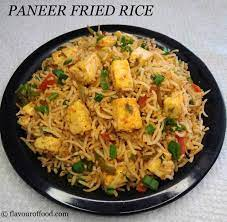

Veg schezwan fried rice353 Ratings150Rs |500 ML| Serve 1| | This classic Veg Fried Rice recipe is made with a hearty mix of fresh vegetables, green onions, seasonings and spices for an incredibly taste .| |
 |
Panner Fried rice482 Ratings230 Rs |500 ML| Serve 1| |This classic panner Fried Rice recipe is made with a hearty mix of panner ,fresh vegetables, green onions, seasonings and spices for an incredibly taste| |
 |
Egg Fried rice367 Ratings270 Rs |Medium spicy | Serve 1| | This classic Egg Fried Rice recipe is made with a hearty mix of egg ,fresh vegetables, green onions, seasonings and spices for an incredibly taste| |
|
chicken Fried rice248 Ratings179 Rs |500 ML| Serve 1| | This classic chicken Fried Rice recipe is made with a hearty mix of chicken ,egg ,fresh vegetables, green onions, seasonings and spices for an incredibly taste| |
 |